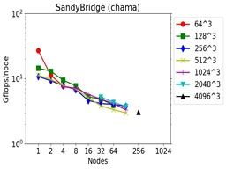
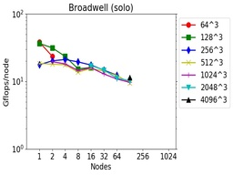
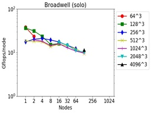

These are timings for 3d FFTs (double precision, complex-to-complex) using the fftMPI library on different machines and node hardware (see details below).
FFTs of different sizes were run on different node counts. The Gflop/node performance is listed as 5Nlog2(N) flops per FFT / CPU time. N is the total count of 3d grid points. E.g. N = 262144 for a 64x64x64 FFT. The initial spatial decomposition of the FFT grid was into 3d bricks (one per MPI task). The final decomposition was the same. So the FFT cost includes operations to both remap the grid before performing the initial set of 1d FFTs, and to remap the grid after the final set of 1d FFTs.
These tests were run in early 2018 using the fftmpi/test/test3d.cpp code included in the fftMPI distribution. Click on a plot to view a larger version.

 


The downward slope of the curves from left to right is decreasing parallel efficiency due to increased communication costs as more nodes and MPI tasks are used.
The tables have a line for each data point in the corresponding plot with the following fields:
See the setup() API doc page for more details on the meaning of these 3 settings. The choice of settings were determined by using the tune() method of fftMPI to auto-tune its performance for a particular FFT size and node count.
Machine info:
chama = Intel SandyBridge CPUs
edison = Intel IvyBridge CPUs
cori = Intel Haswell CPUs
cori = Intel KNLs
solo = Intel Broadwell CPUs